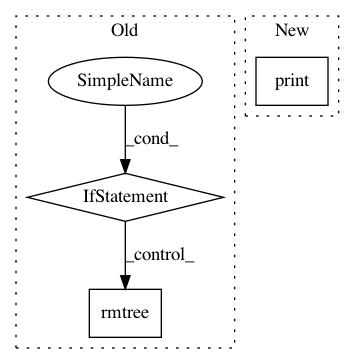

7eb019d10d9a603e5f2b29300fa2d811e197d529,sos/__main__.py,,cmd_remove,#Any#Any#,415
Before Change
print("Would remove {} with tracked files if empty".format(d))
else:
//if os.listdir(d):
if not os.listdir(d):
if get_response("Remove {} with tracked files".format(d)):
if os.path.isdir(d):
shutil.rmtree(d)
else:
os.unlink(d)
else:
print("Do not remove {} with tracked file because it is not empty".format(d))
elif args.untracked:
for f in specified_untracked_files:
if args.__dryrun__:
print("Would remove untracked file {}".format(f))
After Change
target = os.path.expanduser(target)
if args.__dryrun__:
if args.signature:
print("Would remove signatures of {}".format(target))
else:
print("Would remove {}".format(target))
elif os.path.exists(target) and target != ".":
if get_response("Remove {}".format(target), always_true = args.signature):
In pattern: SUPERPATTERN
Frequency: 3
Non-data size: 3
Instances
Project Name: vatlab/SoS
Commit Name: 7eb019d10d9a603e5f2b29300fa2d811e197d529
Time: 2017-02-10
Author: bpeng@mdanderson.org
File Name: sos/__main__.py
Class Name:
Method Name: cmd_remove
Project Name: deepchem/deepchem
Commit Name: 1a0a14ac9ca854a013083c7430221167283329e7
Time: 2016-11-02
Author: bharath.ramsundar@gmail.com
File Name: examples/tox21/tox21_graph_conv.py
Class Name:
Method Name:
Project Name: deepchem/deepchem
Commit Name: 1a0a14ac9ca854a013083c7430221167283329e7
Time: 2016-11-02
Author: bharath.ramsundar@gmail.com
File Name: examples/tox21/tox21_tf_models.py
Class Name:
Method Name: